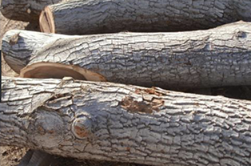
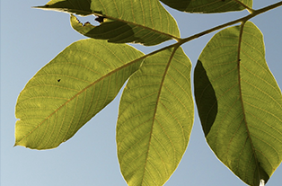

아낌없이 주는
호두나무
중국 이름 호도에서 유래된 것으로,
오랑캐(
胡
) 나라에서 들어온 복숭아(
桃
)라는 뜻.
잎 뒷면
연녹색이고 잎맥 주위에
털이 약간 있다.
수꽃
묵은 가지에
바짝 붙어서 달린다.
열매
9~10월에 4~5cm 크기의 열매가
1~3개씩 모여 열린다
암꽃
봄에 잎이 나면서 꽃이 핀다.
잎
앞부분의 잎이 가장 크다.
잎끝에 작은 잎이 있다.
겨울에 잎이 지는 큰키나무 이다. 높이는 20m 안팎이다.
호두 열매
날로 깨 먹거나 기름을 짜서 먹는다. 기름을 짜고 남은 찌꺼기는 과자나 엿을 만들 때 넣으면 맛이 좋다.
호두기름은 기침을 멎게하고, 가래를 삭이며, 변비에 좋다.

나무 목재
단단해서 비행기나 배를 만드는 데 쓴다.
물에 젖어도 갈라지거나 비틀어지지 않아 가구, 악기, 공예품 만들 때 쓴다.

호두 나뭇잎
호두 잎을 달인 물을 습진이나 옴을 앓을 때 바르면 좋다.
벌레에 물렸을 때 생잎을 붙이기도 한다.